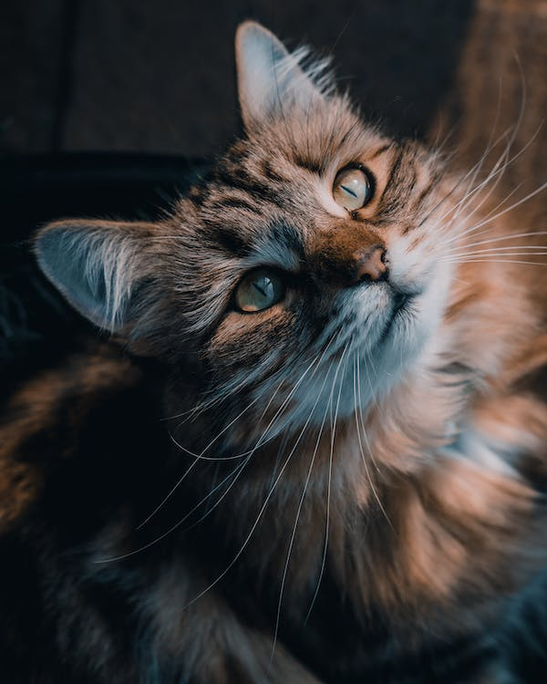

Cats:
a small domesticated carnivorous mammal with soft fur, a short snout, and retractable claws.
Welcome to CatWeb
A place for cat lovers to share their stories or create blogs!
Why should you get a cat? Click here to find a list of reasons!
For more cat photographs, see the gallery section!
